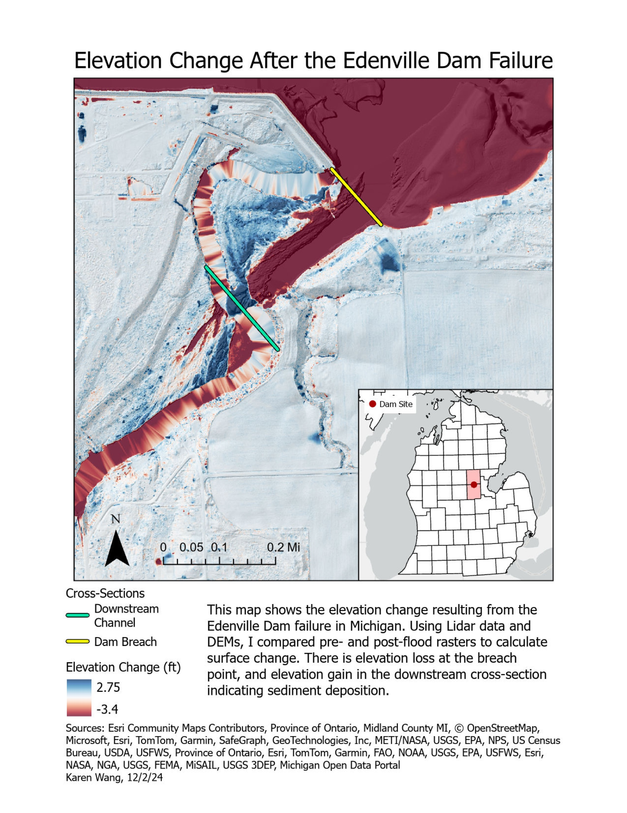

Elevation Change After the Edenville Dam Failure
Karen Wang
Description
This map visualizes the elevation change resulting from the Edenville Dam failure in 2020, which caused severe flooding and damages to the local area in Michigan. Using LiDAR data, I created pre-flood and post-flood DEMs, then used Raster Calculator to find the elevation change. Negative values indicate erosion, which mostly occurred where the dam burst, while positive elevation change represent sedimentation. In making this map, I learned how to use LiDAR data and DEMs to analyze the impacts of natural disasters on the landscape.